Lantern Web: screen options (design only)
2026-10-21. Interactive pages (real tree data, real rules, connected-unlock proposal on): option-a.html, option-b.html, option-c.html (gear = presets, bank a run, today's rules via ?conn=0). Screenshots in shots/ at 1280x720, 844x390@2x, 390x844@2x. Nothing in the game or the locked docs changed.
1. What the "faint lines behind everything" are
- 23 long threads across the web: a lantern's next rank lives in a far group (Second Glance near the hub, Third Glance in the Card Fan 1,268 units away; Kinder Hearts to its next rank 2,255 away). Drawn at 28% alpha.
- Criss-cross hub star: 41 hub threads plus ring-to-ring threads that cross each other.
- Every locked thread at 12-28% alpha, all over the map.
- Guide circles: Hearth, Wick and Dusk rings, dashed chapter-band rings, dashed tool-group circles, dashed "?" circles and the fog ring (the dark wedge).
All three options remove every guide circle and every locked thread. Lines only show where they mean something.
2. Three options
| A Lantern Trails recommended | B Emblem Sky | C Sky Map + Focus | |
|---|---|---|---|
| Overall look | Plain dusk sky that warms as the tree fills. Soft constellation watermarks. The outline appears only when a constellation is complete. | The emblems are the picture: a stronger fill and a role-colour outline that brightens as it fills. No lines between lanterns. | Two views. The sky map shows one medallion per spirit or group (on phones, a tidy grid). Focus shows one group at a time, large. |
| Links | Glowing trails between lit lanterns. A short fading spark reaches from a lit lantern to each open one (cream = can light, brass = need gold, teal = challenge). Hub lanterns get straight rays (they never cross). Hidden: everything else. Tap a lantern: a dotted path shows its route, including far parents. | None on the map. Tap a lantern to see its route as a dotted path. | Inside the focused group, every link is a gentle curve in 3 weights. A link to another group is a short stub reading "from Hearth and Wick". |
| Node states | 5 looks: Lit (colour), Can light (rays, locked), Not enough yet (brass ring), Challenge (teal progress ring), Not yet reachable (small quiet bead, no padlock). | The same 5, but quieter: open lanterns are hollow rings with a coin pip, and unreachable lanterns are a faint outline. | The same 5, plus an icon inside each (tick, flame, coin, flag, moon), so colour is never the only cue. |
| "What do I do now" | A calm Next step bar ("Light Third Glance: lets you reroll level-up cards, 270 gold", with a Show me button). A pin marks the ONE best-next lantern, and an edge arrow points to it when it is off screen. | A guide wisp circles the best-next lantern, with a small speech bubble. | A numbered "Next steps" checklist on the sky map (1 = best buy). The focus view has a one-line footer. |
| Legend + onboarding | All options: a ? button always in the toolbar opens "What the lanterns mean" (drawn with the real shapes), plus "Show only what I can light" and "Show the tips again". The first-visit tip fades after 9 s or on the first tap. On a new save, goal bars are hidden and one line says "Finish a run to earn gold". | ||
| Declutter by zoom | Far: group names and a ready count only (names drop when too small, e.g. at 1,000 nodes). Mid: names only for the selected, best-next and can-light lanterns. Near: all names except unreachable ones, with a collision pass that also avoids lanterns. | Names only for the selected, best-next and hovered lanterns. | Every name, because only one group is on screen. |
| Goals panel | Never floats over the map: a Goals tab in the same side panel or bottom sheet as the details. Each goal shows its REWARD ("Wakes a new spirit for your runs"). | A slim strip under the toolbar (3 chips on desktop; on phones, 1 chip plus "+2" that opens a dropdown). | The checklist on the sky map (left column; bottom sheet on a phone). |
| Risks | Groups with no lit lantern show no lines at all (a "where do I start" moment): the spark and best-next pin cover it. | Cleanest look, but the "web" and the path feel are weakest. Hidden names mean more tapping. | Weakens the locked "big pannable web" feel (two views, more taps). Most build work. |
Shared fixes from the independent review, built into all three: the best-next rule (pinned path, then options/verbs, then nearly-complete group, then cheapest), with its one "why" line; the "can light" halo only on the best-next lantern (rays stay on every affordable one, as locked); a numbered checklist instead of "Locked" plus "To wake it"; 44 px touch targets; zooming in when 2 lanterns share one finger; a solid toolbar band on phones; fog text at full contrast; "spirit asleep" merged into "Not yet reachable" in player words. Draw time: 156 nodes about 2-3 ms; 1,000 nodes about 3-5 ms (32 ms mid-zoom at 4x CPU throttle, the same as the old prototype).
3. Screens
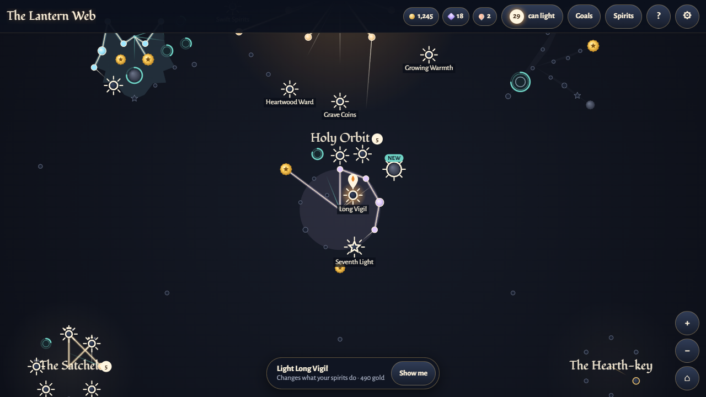
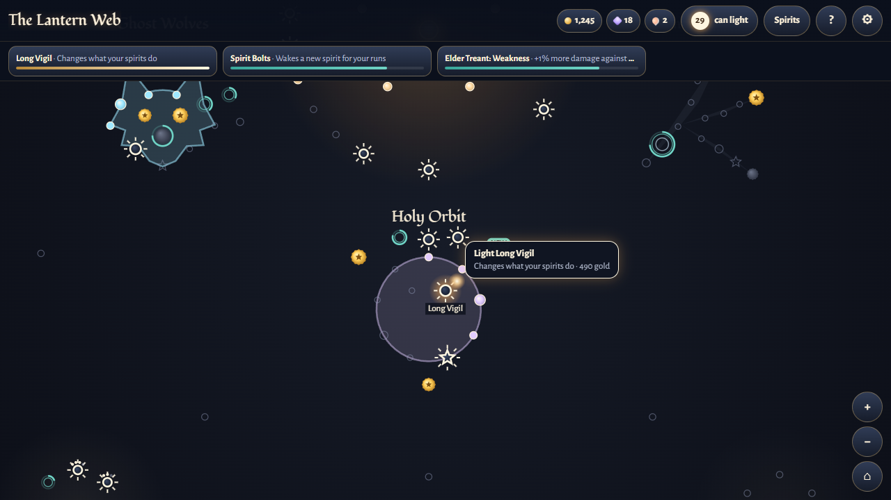
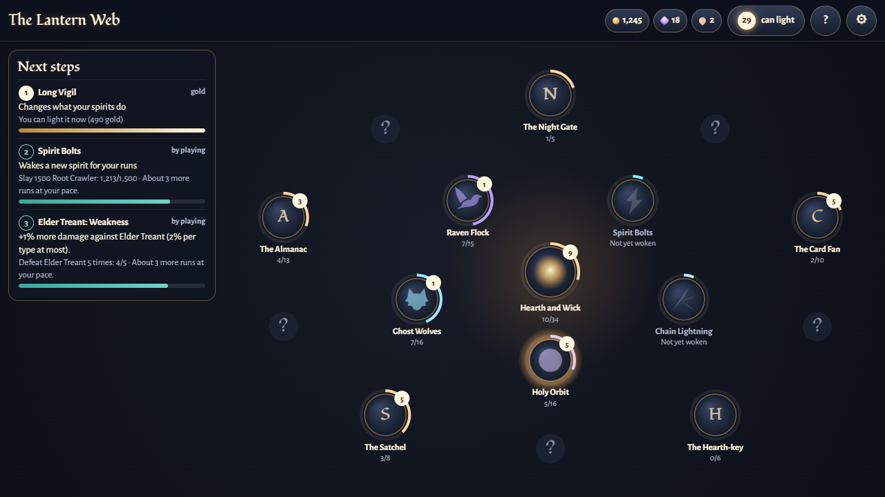
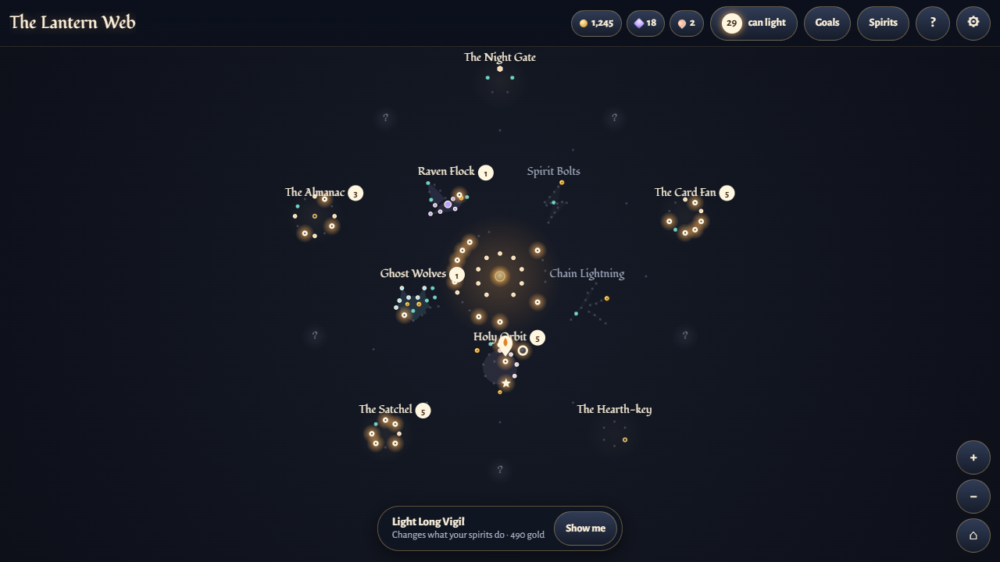
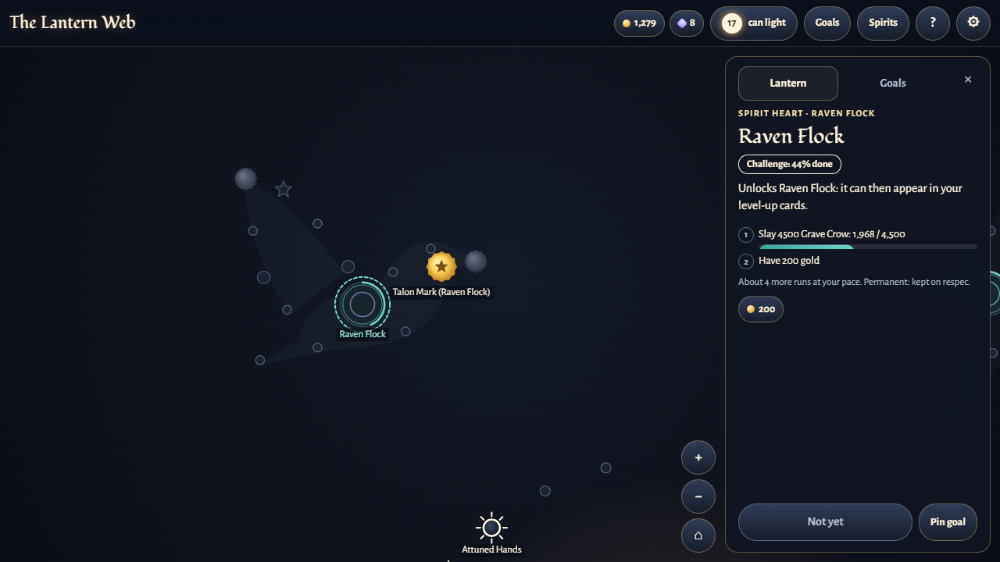
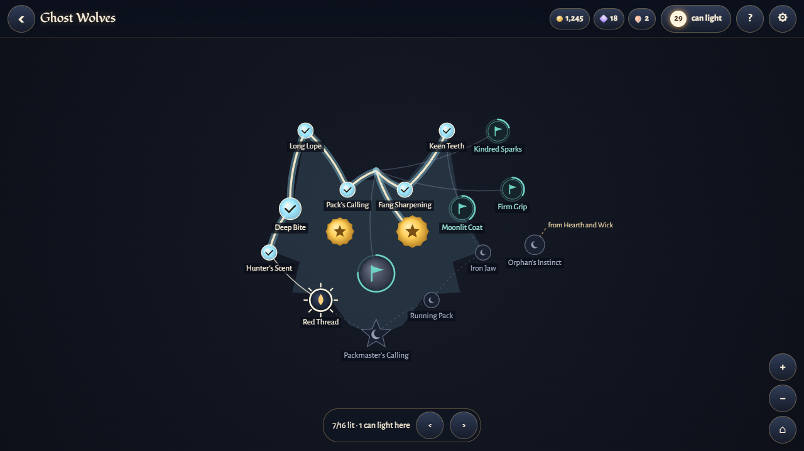
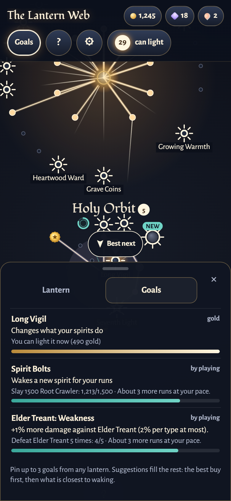
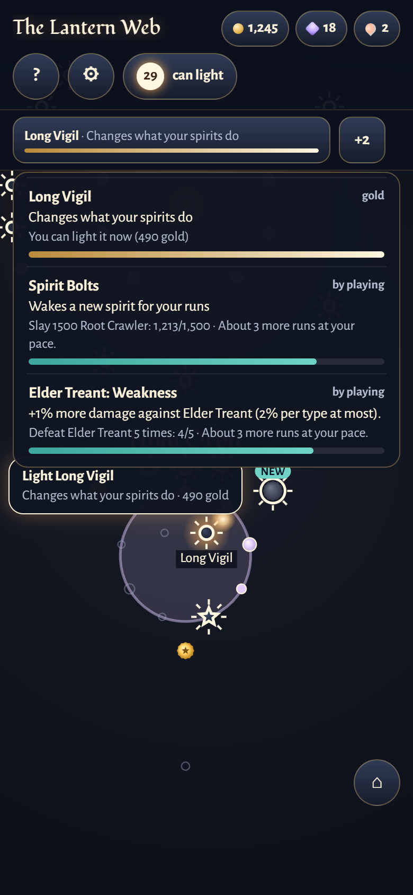
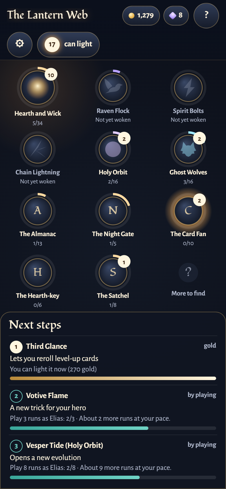
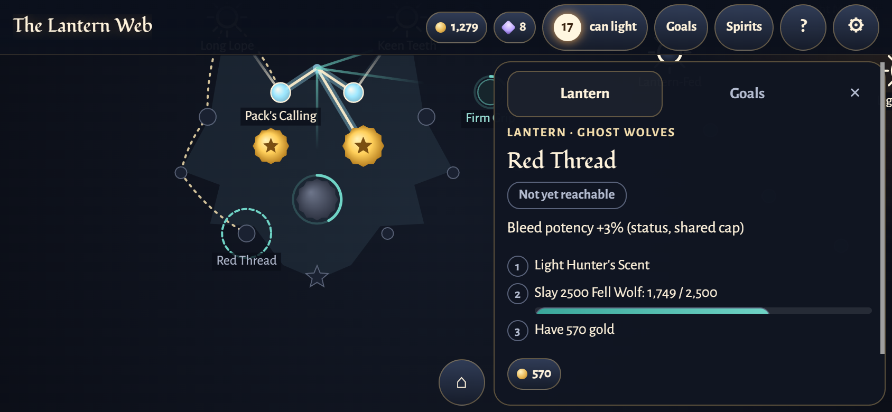
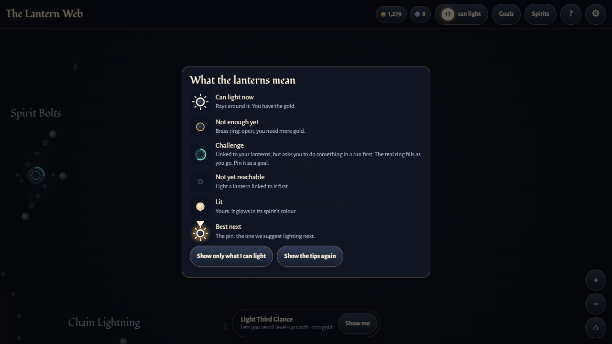
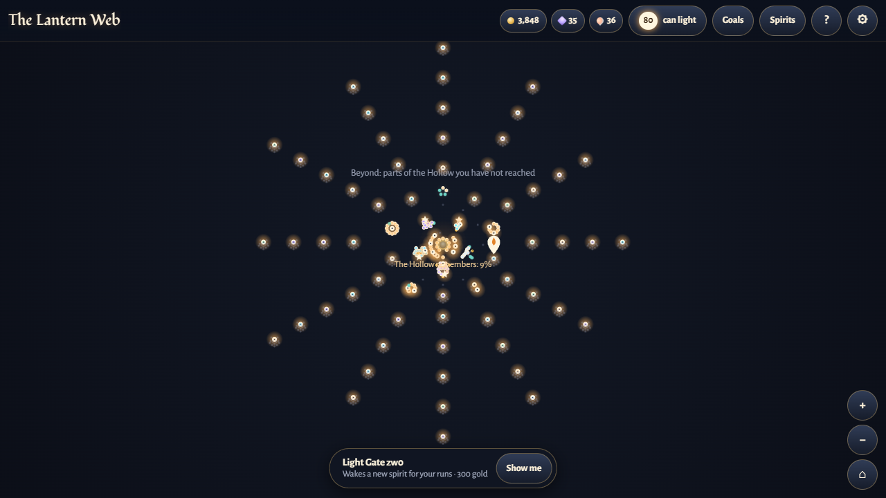
4. Connected-unlock rule (Matt 2026-10-21): shown in the mock-ups, not built into the rules
What it changes today (prototype count against the real tree): lanterns you can light right now go 16 to 12 (after run 1), 24 to 17 (after run 3) and 29 to 29 (after run 10). Held back: the 9 far group roots (the first lanterns of the Satchel, Card Fan, Almanac and Hearth-key groups, the Night Gate tier gate, Wider Lantern and Eager Gems), plus the evolution seals of weapons not yet woken. Best-next did not change in any preset.
| Exception in today's data | What the rule would do | Recommendation (Matt decides) |
|---|---|---|
Weapon hearts (Raven, Bolts, Chain): requires [], permanent gates | Nothing next to them is owned, so they could never open | Keep them linked to the hub: always on the frontier as a Challenge. No data change. The "gates only require gates" rule stays. |
Evolution seals: requires [] by locked design | Same | A seal is reachable once its constellation heart is lit. This is the existing UI-only "dormant" rule, now named; no data change. Its condition still applies. |
| Starter constellations hang from display hearts | The first lanterns would have no owned neighbour | Display hearts count as lit (always), so wolf and orbit lanterns are on the frontier from run 1. |
| 9 group roots hang from "hub" but sit 1,100-1,400 units out | Open from run 1 while visually disconnected | Add one gold-only bridge lantern per group, from the nearest Wick or Dusk lantern (a data change). The mock shows this as "opens once a Wick lantern is lit". The tier gate stays hub-linked (gates may only require gates). |
| 23 far-placed next ranks (Third Glance etc. in the Card Fan, 1,268 from Second Glance; Kinder Hearts to its next rank 2,255; ...) | Linked in the data but not next to each other, so the path is not visible | Move each next to its parent (positions only, ids kept). Until then, the dotted route on select. |
| 2 joins that need ALL parents (Steady Breath needs Second Glance AND the first banish; Full Almanac needs all 4 bestiary lanterns) | The rule says any one neighbour is enough | Switch both to "any one". The 5 other joins are already "any". |
Design risk: stalled behind challenges. If the only open edges are challenge-locked, the player has gold and nothing to buy (or only a grind to chase). The prototype presets have at least 9 gold-buyable frontier lanterns at every stage up to run 25 (new save: 0 affordable, 9 open, 12 challenges; run 25: 23 affordable, 9 challenges). Fix: (1) a layout rule: every challenge lantern has a gold-only sibling branch from the same parent, so a challenge never sits alone on a path; (2) a validator check (C.6) that refuses a group whose only exits are challenge-locked; (3) a timeline-sim metric: "runs with zero gold-buyable frontier while the tree is unfinished", target 0. Challenge conditions stay multi-axis (kills, tiers, heroes, evolutions) and capped at about 5 normal runs at their chapter. Fog teasers are unchanged. The balance/economy analysis of depth-scaled costs follows separately.
5. Fit and security
Fit: Lantern Glass tokens, Hollowlight Chancery + Alegreya Sans, teal NEW, gold only for evolution seals, colour returns as the tree fills. The lines now behave like the in-game spirit trails (only where light has travelled). Security: self-contained pages, no new dependencies (esbuild is already a Vite dependency), textContent only, preset and pin ids validated, URL params whitelisted, localStorage wrapped in try/catch, the temp Chrome profile is deleted after screenshots.